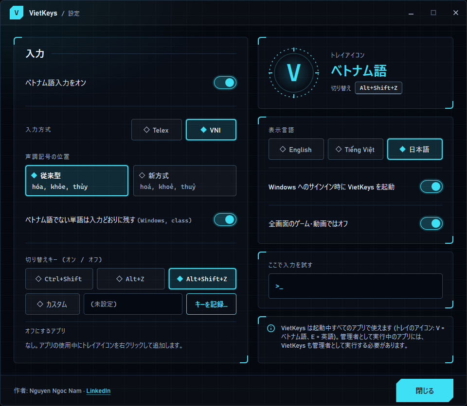

Telex と VNI
記号や声調は単語のどこで入力しても OK (tienge → tiêng)。入力に合わせて声調が正しい母音へ移動します: hoaf → hòa、続けて n → hoàn。
Telex と VNI に対応。Windows 11 のメモ帳、ブラウザー、Office、チャットなど、すべてのアプリで使えて、日本語 IME とも共存します。小さなアプリ 1 つだけで、Windows にキーボードを追加する必要はありません。
VietKeys を選ぶ理由
ベトナム語入力ツールは、Backspace を送ってから新しい文字を送ることで単語を直します。Backspace がまとめて届くと、一部のアプリ (例: 日本語 IME 使用時の Windows 11 メモ帳) は一部しか処理せず、文字が崩れます。VietKeys は Backspace を 1 つずつ順番に送るので、どの単語も正しく入力されます。
Windows 11 のメモ帳 (Microsoft 日本語 IME 使用)、通常のテキスト ボックス、書式付きテキスト ボックスで自動入力テストにより確認しています。
| まとめて送信 | VietKeys |
|---|---|
| toôi | tôi |
| dđang | đang |
| tiêńg | tiếng |
| chaào | chào |
機能
記号や声調は単語のどこで入力しても OK (tienge → tiêng)。入力に合わせて声調が正しい母音へ移動します: hoaf → hòa、続けて n → hoàn。
IME がオン (あ / 中 / 한) の間は、すべてのキーを IME に任せます。IME をオフにすれば、すぐにベトナム語を入力できます。終了や再起動は不要です。
全画面のゲームや動画には本来のキーがそのまま届きます (StarCraft のコントロールグループ 0〜9 も)。ほかのアプリでも、トレイのアイコンを右クリックするだけでオフにできます。
単語の途中まで消して入力し直しても変換が戻ります: Vi65t ⌫⌫⌫ e65t → Việt。単語の後のスペースを消せば、その単語をそのまま編集できます。
ベトナム語になりえない単語は、入力したとおりに残ります: Windows、class、Notepad、text。
Ctrl+Shift、Alt+Z、Alt+Shift+Z、または自分で記録したショートカット。選んだキーだけが有効なので、アプリのほかのショートカットはそのまま使えます。
hóa、khỏe、thủy か、hoá、khoẻ、thuỷ か。好みで選べます。
0.5 MB のファイル 1 つだけ。インターネットに接続せず、何も収集しません。入力内容はあなたの PC から出ません。画面は英語・ベトナム語・日本語。
設定
Telex / VNI、声調の位置、切り替えキー、ゲーム、試し入力欄。トレイのアイコンを右クリックして開きます。

早見表
記号と声調は単語のどこで入力してもかまいません。
| キー | 結果 |
|---|---|
| aa | â |
| ee | ê |
| oo | ô |
| aw | ă |
| ow | ơ |
| uw w | ư |
| uow | ươ |
| dd | đ |
| s | ásắc |
| f | àhuyền |
| r | ảhỏi |
| x | ãngã |
| j | ạnặng |
| z | 声調を消す |
Tieengs Vieejt → Tiếng Việt
同じキーを 2 回押すと元に戻ります: ass → as、ww → w。
| キー | 結果 |
|---|---|
| 1 | ásắc |
| 2 | àhuyền |
| 3 | ảhỏi |
| 4 | ãngã |
| 5 | ạnặng |
| 6 | â ê ô |
| 7 | ơ ư |
| uo7 | ươ |
| 8 | ă |
| 9 | đ |
| 0 | 声調を消す |
Tie6ng1 Vie65t → Tiếng Việt
インストール
VietKeys-Setup-0.2.0.exe、0.5 MB。ファイルはこれ 1 つだけです。
言語を選んで「インストール」をクリックし、管理者権限の確認で「はい」を選びます。VietKeys は C:\Program Files\VietKeys に入り、サインイン時に起動します。
トレイの V アイコンを確認: V = ベトナム語、E = 英語。Ctrl+Shift で切り替えます。
詳細情報 → 実行 をクリックします。VietKeys は新しく、まだコード署名されていないため、SmartScreen がまだ認識していません。
同じ VietKeys.exe に、install.cmd、uninstall.cmd、英語・ベトナム語・日本語・中国語のガイドが付いています。インストールせずに VietKeys.exe を直接実行することもできます。
zip をダウンロード · 0.2 MB設定 › アプリ › インストールされているアプリ › VietKeys › アンインストール。設定も含めてすべて削除されます。
63cab8b56364fd6b67f76845128941ced22c0936dadf98e0cd1a6ca2d19cb0a0 VietKeys-Setup-0.2.0.exe 4f0039d635bb0f778aeef299b91f82ccea8285430569ca37b5df4383b3315ee2 VietKeys-0.2.0.zip
よくある質問
はい。ダウンロードして、何台の PC でも使えます。
ありません。VietKeys には通信機能が一切なく、インターネットに接続しません。広告や利用状況の収集もなく、設定は Windows のユーザー プロファイルに保存されるだけです。
すべてのアプリでベトナム語を入力するため、VietKeys はキーボードを監視します (Unikey と同じキーボード フック方式)。ウイルス対策ソフトはこの動作に注目します。確認されたら VietKeys.exe を許可してください。
どちらか一方だけを使ってください。2 つの入力ツールが同じ単語を変換してしまいます。Unikey が起動中のときは、VietKeys の設定画面に警告が表示されます。
そのアプリが管理者として実行されている場合、Windows は通常のアプリからのキー操作をブロックします。VietKeys も管理者として実行するか、そのアプリを通常どおり起動してください。
Windows 10 と Windows 11 (64 ビット) です。VietKeys は exe ファイル 1 つだけで、ランタイムなどのインストールは不要です。